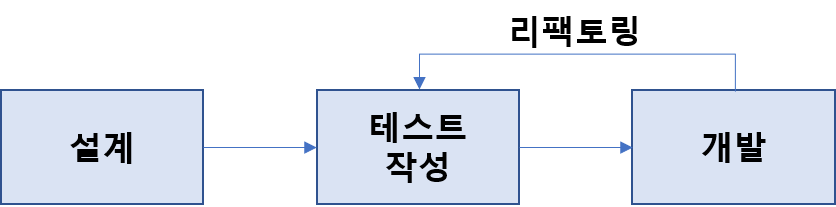

TDD (Test Driven Development)
개발 시 테스트가 중요하다는 것은 많이 들었지만.. 생각만 하고 정작 실천은 하지 못했던 것 같다.
그러던 와중 TDD에 대해 공부할 수 있는 좋은 기회가 생겼고, 관련 내용을 간단하게라도 정리해보려 한다.
TDD?
TDD(Test Driven Development, 테스트 주도 개발)란 소프트웨어 개발 방법론 중 하나로 테스트를 먼저 작성하고(Test First Development),
지속적으로 리팩토링(Refactoring)하는 기법이다.
TDD = Test First Development + Refactoring
TDD가 일반적인 소프트웨어 개발 과정과 가장 다른 점은 테스트 코드 작성 시점이라 생각한다.
설계 > 개발 > 테스트 순으로 진행되는 일반적인 개발 과정과 달리 TDD는 설계 후 테스트 코드를 작성한다.

사실 위 설명만 봐서는 무슨 의미인지 잘 와닿지 않을 수 있는데..
조금이라도 도움이 될까 하여 개인적으로 개발하는 과정을 남겨본다.
- 요구사항(기능) 정의
우선순위 결정 및 대략적인 설계 포함 - 기능에 대한 단위 테스트 코드 작성
에러가 없이(빨간줄 없이) 빌드 가능하도록 최소한의 프로덕션 코드 작성
(예: 테스트 코드에서 int를 받아오는 기능이 있을 경우 프로덕션 코드에서는 로직 없이 return 0) - 테스트를 통과할 수 있는 프로덕션 코드 작성
- 리팩토링
- 기능이 완성될 때 까지 3~4 반복
기능이 완성되면 2부터..
기대효과
- 기능 구현에 집중
- 테스트 코드를 먼저 작성하다보니 구현하고자 하는 기능의 완성 형태에 대해 고민하게 되고 의도를 명확하게 정의 가능
- 프로덕션 코드 작성 시 기능의 의도에 집중해 구현 가능
- 유지보수 용이
- 모든 기능에 대해 단위 테스트가 작성되어 있다보니 리팩토링 시 불안하지 않아도 됨
- 코드를 수정하거나 새로운 기능 추가 시 원하는 부분에만 집중 가능
- 문서화 대체 가능
- 문서화가 필요 없다는 말은 아님
- 별도의 문서화를 하지 않아도 테스트 코드를 통해 코드 파악 쉽게 가능